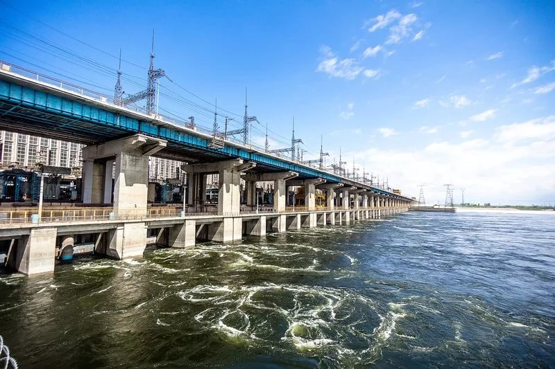
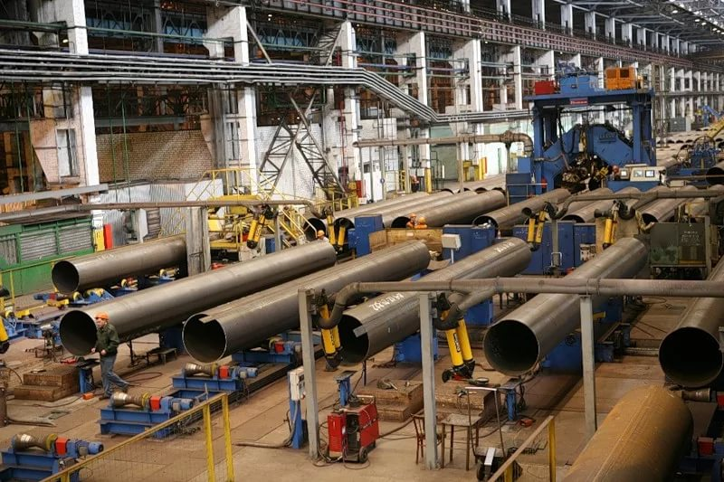

- Обращение руководителя
- О бюджете
- Брошюра "Бюджет для граждан"
- Планирование бюджета
- Исполнение бюджета
- Государственные программы
- Государственный долг
- Социально-экономическое развитие
- Межбюджетные отношения
- Финансовый контроль
- Общественное участие
- Финансово-хозяйственная деятельность
- Новости
- Контакты
- Карта сайта

Перечень крупных налогоплательщиков
На 01.01.2016 удельный вес налоговых поступений от десяти крупнейших налогоплательщиков в общем объеме поступлений в консолидированный бюджет Волгоградской области составил 37,3%. В перечень крупнейших налогоплательщиков входят следующие десять организаций:
- ООО "ЛУКОЙЛ-Волгограднефтепереработка"
- АО "Нефтяная компания "Лукойл"
- АО "Волжский трубный завод"
- АО "САН ИНБЕВ"
- АО "РусГидро"
- ООО "Империал тобакко Волга"
- АО "Волжский оргсинтез"
- Филиал компании с ограниченной ответственностью "ТЕКНИКАС РЕУНИДАС, С.А."
- Волгоградский отряд охраны АО "Газпром"
- Волгоградское отделение Приволжской железной дороги - филиал АО "Российские железные дороги"
Объем поступлений в консолидированный бюджет



Комитет финансов Волгоградской области
400066, Волгоград, ул. Порт-Саида, 7
телефон: (8442) 30 91 06
факс: (8442) 38 58 91
Мы в социальных сетях: